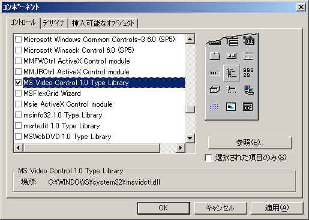
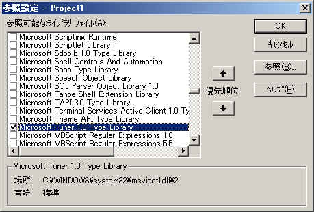
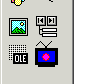
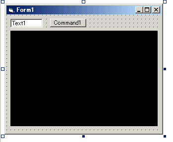

DirectShow関係
８． TV表示
８．2 プログラムからTVを表示（WindowsXP専用)
基本的に7.1のグラフを作ればTVが表示できるわけですが、
クロスバーを設定したりチャンネルを変更したりってのは結構面倒だったりします。
ですがWindowsXP環境であればVBから容易にTVを表示する手段が用意されています。
こではそれを使ってVBでTV表示をする方法を紹介します。
◎概要
WindowsXPでTV表示を行うには「Microsoft TV
テクノロジ」というものを使用します。
これを使うと他のページで散々書いている「グラフ」とか「フィルタ」とか知らなくても
VBでTV表示ができます。（＾＾；
Microsoft TV テクノロジでTV表示を行うには下記のような流れになります。
チューニングスペースの作成 → チューニング要求の作成 → チャンネル選択 → デバイスの構成 → 再生
フィルタとかピンとかが出てこないですが、
さらに訳分からん言葉が並びます（笑
では、例によってサンプルコードで説明します。
◎参照設定
VBでTVを表示するには、一つのコンポーネントと、一つの参照設定を行います。
まずコンポーネントは、
メニュー「プロジェクト」−「コンポーネント」でダイアログを開いて
MS Video Control 1.0 Type Library
を追加します。

次に、メニュー「プロジェクト」−「参照設定」のダイアログを開いて
Microsoft Tuner 1.0 Type Library
を追加します。

◎フォームの作成
コンポーネントを追加すると、コンポーネント一覧に
いかにもプログラマがやっつけ仕事で作ったようなアイコンが現れます（笑

もう、他のアイコンとの違和感ありまくりｗこのアイコンのコントロールをフォームに貼り付けます。
（貼り付けると黒い四角になります。この部分にTVが表示されます。）
他に、チャンネル番号を入力するテキストボックスと
チャンネルを変更するコマンドボタンを適当に配置します。

各コントロールの名前/プロパティははデフォルトのままで話を進めますが、
気に入らなければ適当に変更してください。
◎実際のコード
サンプルの動作としては、コマンドボタン押下でテキストボックスに入力されたチャンネルを表示します。
下記がTV表示のサンプルコードになります。
|
たったこれだけです（笑
順に説明します。
|
初めに「チューニングスペース」を作成します。
今回はアンテナ入力のアナログTVを表示させるので
「TunerLib.AnalogTVTuningSpace」というオブジェクトを作ります。
（チューニング対象によっていくつかのオブジェクトがあります。
ATSC用、DVB用、コンポジット入力用、ラジオ用とかね。
ちなみにATSCってのはアメリカのデジタル放送、
DVBってのはヨーロッパのデジタル放送。だったと思う^^;;）
これの各プロパティを設定することで、
チューニングの範囲と入力タイプなどを決定します。
サンプルでは日本の周波数帯で、チャンネル範囲を１〜62、入力をアンテナとしていいます。
|
次にチューニングスペースオブジェクトから「チューニング要求」を作成します。
「IChannelTuneRequestオブジェクト」というのはアナログ用のチューニング要求で
ATSCやDVB用は別のがあります。
（アメリカの放送には興味がないんで、興味のある方はDirectX9のヘルプを見てください）
チューニング要求はチューニングスペース（AnalogTVTuningSpace）の
「CreateTuneRequest」メソッドを使います。
|
チューニング要求オブジェクトの「」プロパティにチャンネル番号を入れます。
これで「チューニング要求」が完成です。
|
「チューニング要求」ができたら、
それを引数にビデオコントロールオブジェクト（MSVidCtl1）の「View」メソッドを呼び出します。
これで「チューニング要求」がビデオコントロールに渡されます。
この時点でビデオコントロールの中でTV画像の入力部分のグラフが作られます。
後はビデオコントロールの「Run」メソッドでグラフが再生＝TV表示が始まります。
実はRunの前に「Build」という操作が必要なんですが、
Buildされていない状態でRunが呼び出されると
自動的にやってくれるそうなんで省略しています。
Viewではグラフの入力部分が作られて、Buildでその他(レンダラ等)が作られるみたいですね。
以上でVBからTV表示を行うことができます。
個人的な意見なんですがキャプチャカードについてくるTV表示アプリとかは
なんか余計なインターフェースが多くて嫌なんですよね。
ただ表示するだけならVBでも簡単に作れるので
だれかクールなやつを作ってください。
ちなみに普段はGraphEditで見てます（＾＾；；